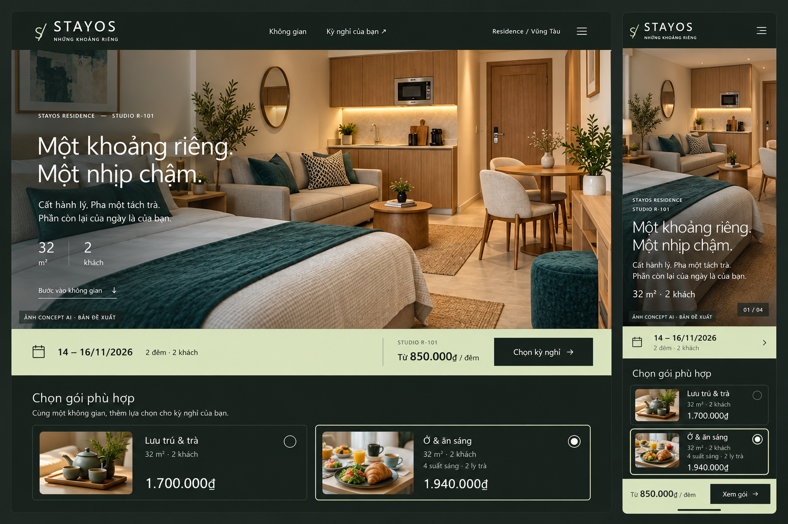
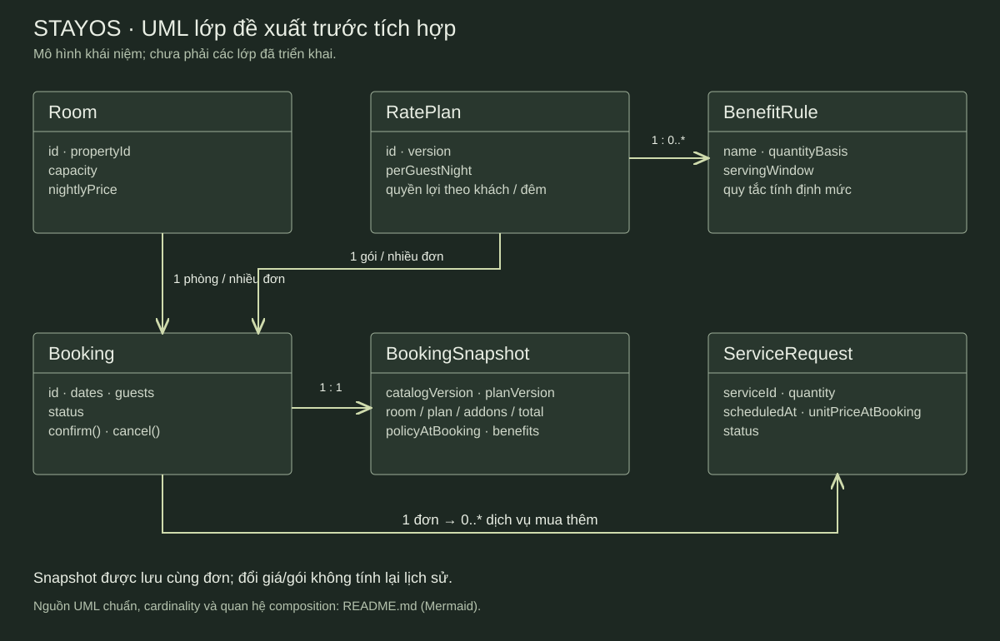
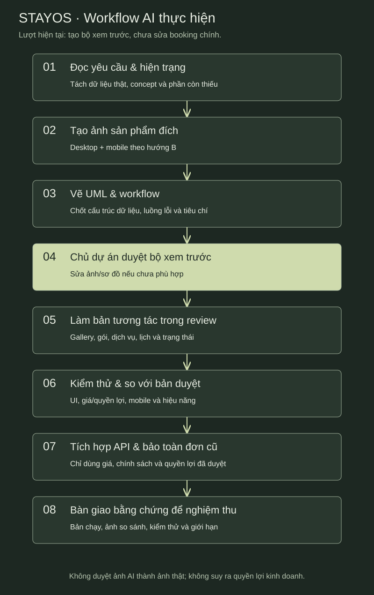

STAYOS / TRƯỚC KHI TRIỂN KHAI
Nhìn kết quả trước.
Hiểu cách AI sẽ làm.
Ảnh đích sản phẩm, UML và workflow đề xuất. Chưa thay booking chính.
01 · Ảnh kết quả dự kiến

Concept AI cho giao diện; không phải screenshot bản đã lập trình. Tổng gói minh họa cho 2 khách / 2 đêm.
02 · UML lớp đề xuất

Phiên bản Mermaid chỉnh sửa được và UML tuần tự client → API → SQLite nằm trong tài liệu thiết kế.
03 · AI làm theo thứ tự nào?

Duyệt hình thức không đồng nghĩa duyệt giá, chính sách, ảnh thực tế hoặc mở bán. Các bước tích hợp là đề xuất cho giai đoạn sau.